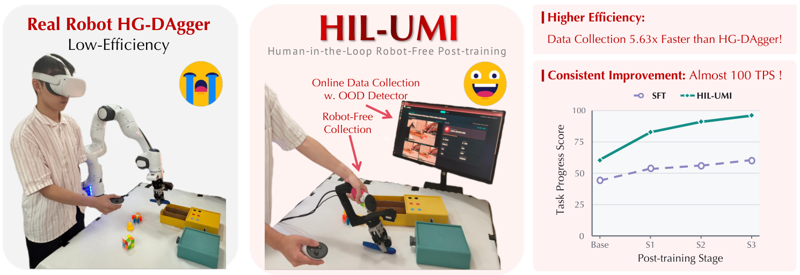

Undergraduate
I am an undergraduate student in MEng Computing at Imperial College London. My recent work spans Embodied AI, systems programming, compiler construction, and full-stack web development.
I am currently building software and robotics projects across research internships and course projects, with interests in practical machine learning systems, robot manipulation, and reliable computing infrastructure.
The ends do not define means, they never do.
Education
Selected Publications

2026 | In Submission
HIL-UMI: Bringing Human-in-the-Loop Post-Training of Vision-Language-Action Models to Universal Manipulation Interface
A policy-guided, robot-free framework for human-in-the-loop post-training of vision-language-action models using the Universal Manipulation Interface.
Experiences
Jul 2026 - Present Research Intern Peking University
- Advised by Prof. Hao Dong
Jul 2025 - Oct 2025 Research Intern Shanghai Jiao Tong University
- Advised by Prof. Yong-Lu Li
Robotic Platforms
Robotic platforms I have hands-on experience with.
Loading Franka Panda...
Franka Emika Panda
Loading Mobile ALOHA...
AgileX Mobile ALOHA
Loading Universal Manipulation Interface...
Universal Manipulation Interface (UMI)
Projects
May 2026 - Present WhereToI Web App Group Project Full-stack web application
- Built a full-stack web prototype for locating and comparing nearby public toilets by distance, access, cleanliness, cost, opening status, and facilities.
- Implemented an interactive map with geolocation, search, filters, sorting, toilet detail cards, and external directions.
- Developed authenticated feedback workflows with ratings, comments, profile visibility, access history, and Gemini-assisted comment summaries.
- Built a Node.js backend with PostgreSQL/SQLite storage, CSV seed import, REST APIs, caching, and optional PaddleOCR/YOLO-based photo analysis.
Jan 2026 - Mar 2026 WACC Compiler Group Project Compiler
- Built a full compiler for the WACC language targeting AArch64, ARM32 and x86-64 assembly.
- Designed the compilation pipeline including lexing, parsing, semantic analysis, TAC intermediate representation, and code generation.
- Added peephole optimisations to remove redundant instructions and improve generated assembly efficiency.
- Extended the language with function overloading through static type checking and an exception handling mechanism.
Oct 2025 - Dec 2025 PintOS Group Project Operating systems
- Extended kernel threading with priority scheduling, priority donation, and the BSD scheduler.
- Implemented system calls, process loading, argument passing, and safe user-kernel memory access for user programs.
- Built virtual memory support with lazy loading, supplemental page tables, dynamic stack growth, and second-chance frame eviction.
- Added swap support, shared executable pages, and memory-mapped file management.
Jul 2025 - Aug 2025 YOLO-Based Autonomous Path Planner for Urban Driving Computer vision
- Developed a causal, uncertainty-aware trajectory advisory system for front-view driving videos, integrating YOLO tracking, traffic sign/light recognition, and YOLOPv2 drivable-area and lane segmentation.
- Fine-tuned YOLOv8 on GTSDB, YOLOv11 for traffic-light detection, and a CNN on GTSRB; added lane association and multi-frame confirmation to reduce false detections.
- Designed a multi-hypothesis planner combining semantic road boundaries, bounded ego corridors, candidate-specific obstacle checks, range-rate/TTC estimation, and uncertainty-aware
UNKNOWNrejection. - Built a Gradio demo and video-level evaluation pipeline for day, night, construction, intersection, and congested-road scenarios using ADE/FDE, off-road, collision-risk, TTC, and temporal-stability metrics.
May 2025 - Jun 2025 ARMv8 AArch64 Assembler and Emulator Group Project Computer architecture
- Built an AArch64 emulator to simulate execution of binary programs on a Raspberry Pi.
- Built an AArch64 assembler translating A64 assembly source code into executable binary files.
- Wrote A64 assembly to flash an LED via Raspberry Pi GPIO.
- Implemented a 7-segment display counter with GPIO input controls, debouncing, and timed digit updates.
Visitor Map
Approximate locations of visitors to this website.
The map shows approximate regional locations, not precise addresses. Privacy details